Băng Tuyết
Mặc dù các bạn đang ở một đất nước không có băng tuyết, có chăng chỉ thấy qua báo chí, phim ảnh... Nhưng xin các bạn đừng vì thế mà bỏ qua chương nầy, có thể biết đâu vì một hoàn cảnh nào đó, các bạn lại rơi đúng vào vùng băng tuyết, nơi có những điều kiện và luật lệ sinh tồn rất khắc nghiệt mà nếu thiếu sự hiểu biết, kinh nghiệm và chuẩn bị... chắc chắn các bạn không thể tồn tại, vì mọi sinh hoạt ở những nơi nầy, xa lạ và khác hẳn mọi sinh hoạt thường nhật của chúng ta.
DI CHUYỂN TRÊN BĂNG
Không ai có thể cho rằng: di chuyển trên băng thì an toàn, dù ngay cả khi trời rất lạnh, tưởng chừng như băng đóng rất cứng. Vì có thể dưới lớp băng là một dòng sông đang cuồn cuộn chảy, làm cho lớp băng tan dần phía dưới và trở nên nguy hiểm, cho dù trên bề mặt của nó không có một tí biểu hiện gì.
Kiểm tra độ dầy mỏng của băng (bằng cách chọc thủng một lỗ hay dùng đá lớn ném lên mặt băng) cũng có thể giúp cho chúng ta ước đoán được khả năng chịu đựng của băng và xử trí cho thích hợp. Nếu bề dầy của băng:
- Mỏng hơn 5cm thì rất nguy hiểm
- Khoảng 10cm – thích hợp cho việc câu cá và trượt băng
- Khoảng 20cm – thích hợp cho xe trượt băng
- Từ 20 – 30cm – thích hợp cho xe di chuyển trên mọi địa hình và cả xe hơi.
Nhưng những con số trên đây chỉ là tương đối, vì còn tuỳ thụôc vào loại băng tuyết, quá trình hình thành, tan rã, tái hình thành... bao nhiêu lần
- Khi di chuyển trên băng, các bạn nên cầm nằm ngang một cây sào dài. Cây sào nầy sẽ là điểm tựa của các bạn nếu trường hợp băng bị vỡ, làm cho các bạn rơi xuống nước, nó còn được dùng chọc thủng lớp băng để kiểm tra độ dầy, độ cứng...
- Nếu di chuyển một nhóm, các bạn nên đi hàng một, giữ khoảng cách xa nhau và nên nối với nhau bằng một sợi dây để có thể hổ trợ cho nhau. Không nên đi trên băng một mình.
- Vào mùa xuân, khi băng bắt đầu tan, đây là thời điểm rất nguy hiểm, bởi vì nó rất dễ vỡ.
- Có một loại băng xốp gọi là “candle ice”, vô cùng nguy hiểm, vì loại băng nầy trông rất rắn chắc nhưng thật ra rất dễ vỡ, chúng như nước đá.
DI CHUYỂN TRÊN TUYẾT
Muốn đi lại trên tuyết dễ dàng, các bạn phải có một loại giầy đặc biệt để đi trên tuyết (Snowshoe). Ở đây chúng tôi không có tham vọng hướng dẫn cho các bạn môn trượt tuyết bằng ván trượt, vì nó đòi hỏi một sự luyện tập cẩn thận. Chúng tôi chỉ đề cập đến những điều cần thiết trong việc di chuyển ở những vùng băng tuyết.
CÁC LOẠI GIẦY ĐI TUYẾT:
Mỗi loại giầy đi tuyết đều có những tính chất khác nhau về
- Đặc tính chuyển động
- Cách sử dụng
- Đường ngấn ngập trong tuyết
- Sức chịu nặng
- Độ thăng bằng
Thường thì người ta sử dụng 4 loại giầy đi tuyết sau đây:
1. Kiểu chân gấu (Bearpaw):
Có hình dáng giống như một cái chân gấu, ngắn và gọn nên vận động dễ dàng. Thường được dùng để đi trên đường mòn.
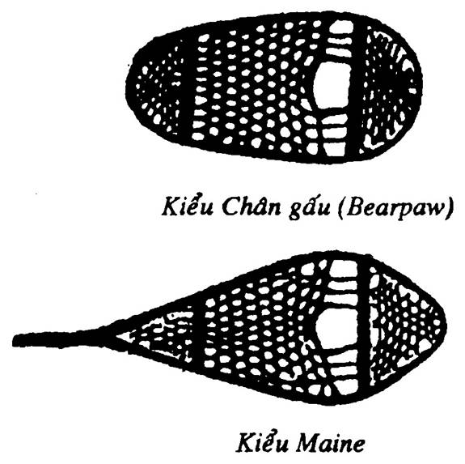
2. Kiểu Maine:
Thường đường dùng trong quân đội. Nó khá dài và rộng nên bất tiện khi bước đi và xoay trở ở những nơi chật hẹp. Bù lại, nó có sức nổi trên tuyết rất tốt, có thể mang vác nặng.
3. Kiểu Michigan:
Giống như kiểu Maine, nhưng kích thước lớn hơn nên sức nổi trên tuyết tốt hơn.
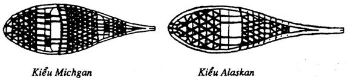
4. Kiểu Alaska:
Là loại lớn nhất, dùng trong các vùng rộng và thoáng, vùng tuyết xốp, mềm. Nhưng lại khó khăn khi sử dụng đối với những người có kích thước nhỏ bé.
CHẾ TẠO GIẦY ĐI TUYẾT
Trong trường hợp khẩn cấp mà các bạn lại không có các loại giầy đi tuyết được làm sẵn, tuỳ theo điều kiện, các bạn hãy chế tạo một đôi theo những cách dưới đây:
1. Bằng nhánh cây:
Chặt một số cành cây thông, cây thường xuân (Evergreen) có đủ cành lá, cột lại với nhau. Dùng dây buộc vào chân các bạn, gốc hướng về phía trước.
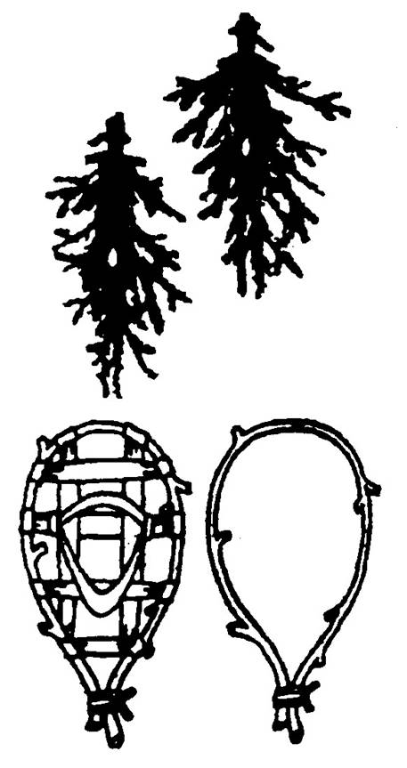
2. Bằng cành cây tươi:
Dùng cành cây còn tươi, trẩy hết cành lá, hơ lửa để khi uốn không bị gãy. Các bạn uốn cong theo hình bên, cột thêm vài cây ngang rồi dùng các loại dây mà các bạn có (dây da, dây vải, dây dù…) để đan căng khung.
3. Bằng cành cây kiểu Canada:
Để làm một chiếc giầy đi tuyết kiểu canada, các bạn hãy:
- Chọn 6 cành cây dài bằng chiều cao của các bạn. Phần gốc có đường kính cỡ 2cm, phần ngọn cỡ 0.8cm.
- Cắt thêm 6 đoạn cây dài khoảng 25cm, đường kính 2 cm
- Bụôc gốc của 6 cây dài vào một cây ngắn, cắt bỏ những phần thừa
- Bụôc 3 cây ngắn ở khoảng giữa của giầy đi tuyết (nơi đặt bàn chân)
- Buộc 2 cây ngắn nơi đặt gót chân
- Buộc túm các đầu cây lại với nhau
Như thế là các bạn đã có một loại giầy đi tuyết kiểu Canada. Để sử dụng, các bạn buộc giầy vào chân bằng các loại dây chắc chắn theo cách trong hình.
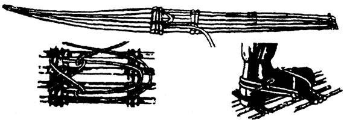
Kích cỡ giầy đi tuyết
Kích cỡ của giầy đi tuyết còn tuỳ thuộc vào loại tuyết, sức nặng của cơ thể bạn và hành lý các bạn mang theo. Lý tưởng là một đôi giầy gọn nhẹ, nhưng nếu tuyết mềm và dầy thì các bạn phải có những đôi giầy dài từ 1,5 – 2 mét và rộng khoảng 30cm.
DI CHUYỂN VỚI GIẦY ĐI TUYẾT
Cách bước: khi đi trên mặt tuyết mềm, các bạn hãy bước tới một cách vững chãi, cho giầy ngập vào trong tuyết và nghiêng người lắc nhẹ để tạo nền chắc chắn trước khi rút chân kia lên để bước tiếp theo.
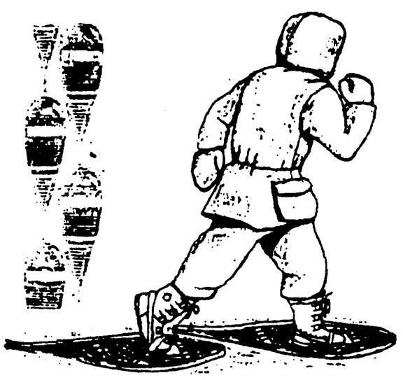
Đi xuống dốc: Hãy chắc chắn là các mối dây buộc ở chân không lỏng hoặc tuột. Nếu không, bàn chân của các bạn sẽ bị trượt trên những thanh ngang và đổ nhào về phía trước.
Hãy nghiêng cứu địa hình tổng thể của ngọn đồi để tìm một con đường đi xuống tốt nhất. Nếu quá dốc, các bạn nên đi xuống theo kiểu zíc zắc. Nếu tuyết đủ chắc, các bạn có thể đặt một chân trước một chân sau và ngồi trên giầy để trượt xuống.
Đi lên dốc: Dùng gậy để trợ giúp chúng ta khi leo lên những đoạn dốc. Gậy cũng rất hữu ích khi các bạn phải di chuyển qua những vùng tuyết dầy hoặc qua những rừng cây.
Lưu ý:
• Không được di chuyển khi sắp có một cơn bão tố kéo tới. Khi đó, cảnh quang chỉ còn là một màu trắng, làm cho chúng ta mất phương hướng.
• Khi thời tiết trong trẻo, các bạn thường ước lượng sai khoảng cách, điều nầy có thể làm cho các bạn đi quá xa, làm cơ thể mệt mỏi, không kịp trở về trước khi đêm xuống.
SỬ DỤNG RÌU LEO BĂNG
Rìu leo băng là một công cụ hỗ trợ đắc lực cho các bạn khi cần di chuyển trên những đoạn dốc đóng băng, nhưng nó cũng rất nguy hiểm nếu như các bạn không sử dụng đúng cách.
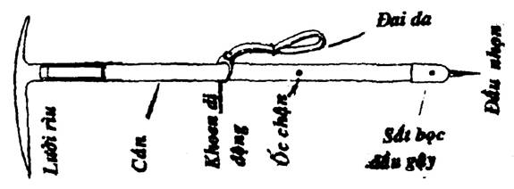
Xuống dốc:
Khi các bạn trượt xuống dốc, hãy dùng rìu leo băng như một cái phanh hay bánh lái. Khi trượt, cong các ngón chân lên, sức nặng của cơ thể nằm ở giữa hai bàn chân, thân hình cong về phía trước. Hai tay chịu cho đầu nhọn cán rìu cắm vào băng. Để dừng lại, các bạn nên trượt ngang vào bờ dốc của sườn đồi. Không nên trượt xuống một vùng mà các bạn không thể tìm thấy nơi dừng chân, vì như thế, các bạn có thể bị lao xuống vực.
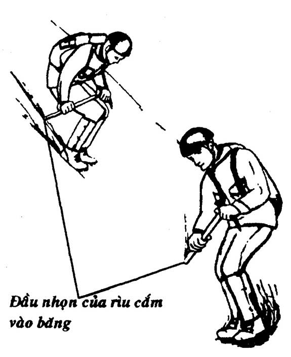
Để dừng lại một cú ngã hay trượt:
Khi các bạn bị ngã hay trượt xuống một triền dốc.
- Hãy cặp cán rìu vào nách dọc theo hông và cày lưỡi rìu vào trong băng để làm cho tốc độ trượt bị chậm lại, khi đó các bạn có thể kiểm soát được cú trượt của mình.
- Nếu các bạn có mang theo dây cá nhân, hãy kết hợp giữa dây và rìu như một cái neo để để chặn một cú trượt hay một cú ngã.
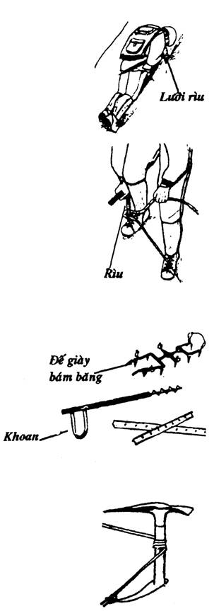
Các dụng cụ khác:
Ngoài dây và rìu trượt băng, người ta còn dùng những dụng cụ hổ trợ khác trong việc đi lại trên băng như:
- Khoan băng
- Đế giầy đinh bám băng
- Cọc đóng trên tuyết
- Piton đóng trên băng
NEO TRÊN BĂNG
Đây là một điểm chịu lực để cho chúng ta cột một đầu dây hay quàng một sợi dây vào, giúp cho chúng ta có thể lên xuống trên một đoạn băng dốc.
Nếu không có cọc hay piton, các bạn có thể dùng rìu leo băng thay thế để làm tạm một cọc neo như hình bên.
Muốn neo trên băng bằng piton, các bạn phải dùng khoan và piton để thiết lập một điểm neo bằng cách:
- Cắt một vết lõm nằm ngang trên sường băng. Dẹp bỏ tất cả những băng vỡ. Sửa lại cạnh gò bằng cho tròn.
- Dùng khoan dùi lỗ để cắm một piton theo hướng thẳng đứng cho ngập đến khoen, dây trì kéo phải cùng góc cắm của piton.
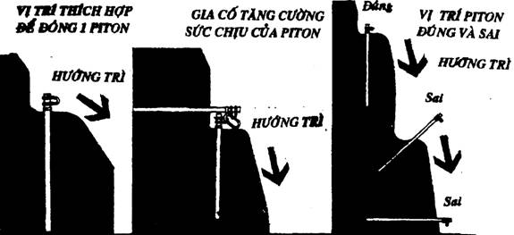
Nếu thấy piton có vẻ yếu, hãy nhổ lên và chọn vị trí mới. Để tăng thêm sự an toàn, các bạn nên đóng thêm một cọc thứ hai, giữ cho cọc thứ nhất không trồi lên.
Cọc sau khi đóng xong, thời gian để có thể sử dụng an toàn thì rất ngắn, vì chúng bị nung nóng bởi mặt trởi ở phần cọc bị lộ ra làm cho phần băng tiếp xúc dần dần mềm đi, và dễ bị bể, và dễ tuột.
Muốn tái sử dụng nhiều lần, hãy phủ chúng bằng những mảnh băng vụn và kiểm tra thường xuyên.
NHỮNG VẬT DỤNG CẦN THIẾT KHÁC
Giầy mùa đông
Là một loại giầy di chuyển được trên băng tuyết, giữ được hơi ấm, mềm mại, và không thấm nước. Nó còn có thể tháo cởi dễ dàng, vì ban đêm chúng ta phải cởi ra cho thoáng và ráo mồ hôi.
Để giữ được hơi ấm cho bàn chân, chúng ta nên mang 2 lớp vớ (tất) được làm bằng nỉ hay lông cừu. Giữa 2 lớp vớ nên có thêm một lớp đệm bằng cỏ mịn hoặc rêu khô xé nhỏ đế hút hơi ẩm. Điều nầy rất cần thiết để giữ ấm đôi chân của các bạn.
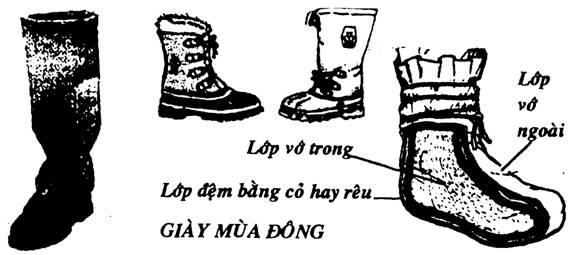
Găng tay
Bàn tay là nơi dễ mất nhiệt nhất, nếu các bạn không bảo vệ, sẽ bị cóng và nếu bị nặng sẽ phải đoạn chi hay tháo khớp.
Các bạn nên sử dụng găng tay dạng cò súng (có thêm một ngón tay trỏ rời ra). Loại nầy khá tiện lợi, bởi vì các bạn có thể buộc dây, sử dụng súng, máy quay phim, chụp hình, cột giầy và thực hiện các công việc thông thường khác mà không cần phải tháo găng ra.

Áo khoác
Ngoài những áo chống lạnh thông thường, chúng ta còn cần một áo khoác. Những người Eskimo dùng một tấm da lớn và rộng để làm áo khoác, khi cần thiết, có thể biến nó thành lều trú ẩn. Sau giầy mùa đông và găng tay thì áo khoác là một thứ không thể thiếu trong trang phục ở vùng giá rét. Áo khoác phải đủ rộng để có thể che phủ toàn bộ quần áo chúng ta đang mặc và cho phép lưu giữ hơi ấm cơ thể.
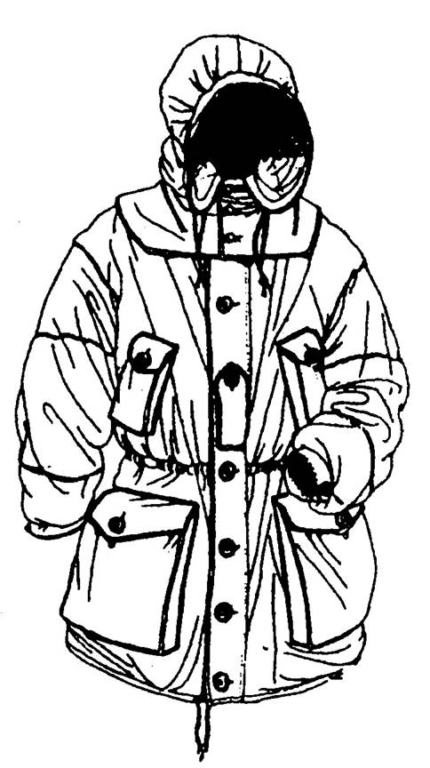
Túi ngủ
Ở những vùng băng tuyết, các bạn khó mà ngủ được nếu như không có một cái túi ngủ (sleeping bag) đúng tiêu chủân. Nhưng nếu các bạn không có những túi ngủ thông thường, các bạn có thể dùng vải dù hay những mảnh vải từ quần áo… để may một cái túi ngủ hai lớp, ở giữa độn rêu hay cỏ khô.
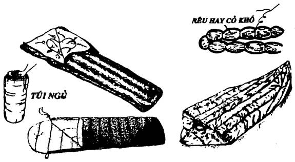
NHỮNG NGUY HIỂM KHI DI CHUYỂN TRÊN BĂNG TUYẾT
Những nguy hiểm khi đi lại, sinh hoạt trên băng tuyết thì rất nhiều, chủ yếu như: khe nứt, thác băng, băng vỡ, tuyết lỡ… chúng ta phải biết cách dự đoán để phòng tránh cũng như khi cần thì biết cách thoát thân.
KHE NỨT
Khi sông băng chảy trên một địa hình bất thường (bờ dốc, vực sâu….), khe nứt có thể xuất hiện ở phần cuối dốc của sông băng. Những khe nứt nầy bị tuyết che phủ (có khi là một lớp rất mỏng) làm cho sự đi lại trên băng rất nguy hiểm, (vì có những khe nứt có thể sâu đến 50 mét). Vào mùa đông, do tuyết phủ và tầm nhìn hạn chế, nên rất khó nhận ra chúng. Vào cuối mùa hè, những khe nứt ở vào thời kỳ rộng nhất nhưng được che phủ bởi một mảng băng mỏng (như một cái cầu). Do đó, nguy hiểm càng tăng lên nhiều lần.
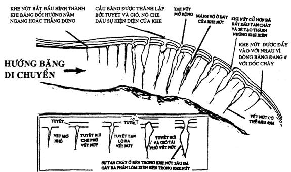
THÁC BĂNG
Nếu sông băng trôi qua một vực thẳm cao hay một dốc đứng, thì băng sẽ gãy và tạo thành một thác băng. Những thác băng này là một trong những trở ngại chính cho việc di chuyển an toàn trên băng. Những vụ tuyết lở cũng thường xảy ra trong các khu vực tiếp giáp với thác băng.
Thời điểm tương đối an toàn nhất để vượt qua những thác băng là vào buổi sáng sớm, trước khi mặt trời mọc.
RƠI XUỐNG HỐ BĂNG
Khi các bạn di chuyển trên một lớp băng mỏng hoặc bên dưới có một dòng chảy làm băng mỏng dần, thì có thể gây ra vết nứt vỡ băng, làm cho bạn rơi xuống nước.
Chỉ sau khi rơi xuống nước một vài phút, hịên tượng giảm nhiệt cơ thể sẽ xảy ra. Đây là một điều vô cùng nguy hiểm, cho nên các bạn phải cố gắng thoát ra khỏi nơi đó thật nhanh.
Khi bị rơi xuống băng, trước tiên, các bạn phải xác định được hướng có băng cứng (dùng cùi chỏ hay nắm tay đập mạnh xuống băng) khi phát hiện ra được lớp băng có thể chịu đựng được sức nặng của các bạn thì để hai tay trên mặt băng, cố gắng trườn lên mặt băng. Khi đã ở trên mặt băng thì khoan vội đứng dậy mà hãy trườn, bò, lăn … để trọng lượng cơ thể của các bạn phân bổ rộng trên mặt băng và không sụp xuống băng một lần nữa. Khi thấy đã đến vùng băng rắn chắc đủ để chịu đựng được sức nặng của cơ thể thì mới đứng lên và di chuyển nhanh vào bờ. Cố gắng làm cho cơ thể nóng lên và khô ráo càng nhanh càng tốt.
Muốn làm quần áo khô, các bạn hãy lăn tròn trên tuyết. Sức nặng của chính cơ thể các bạn sẽ ép nước ra khỏi quần áo và tuyết sẽ hấp thu lượng nước đó. Tuy nhiên số nước còn lại sẽ đóng băng thành một lớp vỏ bọc cứng quanh thân làm tăng trọng lượng và gây khó chịu cho các bạn. Quần áo của các bạn sẽ mất đi khả năng cách nhiệt. Nên thay quần áo và sưởi ấm càng nhanh càng tốt. Nếu không, các bạn sẽ gặp nguy hiểm vì cơ thể bị giảm nhiệt trầm trọng.
CỨU NGƯỜI RƠI XUỐNG HỐ BĂNG
Khi trong nhóm có một người rơi xuống hố băng, đừng vội chạy lại để kéo lên, vì sóng chấn động đã làm rạn nứt lớp băng quanh đó, rất dễ làm cho người đến cứu cũng lọt vào hố băng. Các bạn nên:
- Nằm dài xuống thành một hàng, cầm tay chân nhau cho thật chặt, người đầu hàng vung cho nạn nhân một vật để họ cầm nắm như: áo quần, chăn mền, dây, sào… rồi từ từ kéo họ lên.
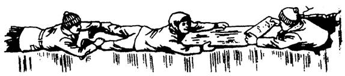
- Nếu thấy băng khá rắn chắc hay gần bờ, thì người thứ nhất cố gắng trườn lên để tiếp cận nạn nhân, người thứ hai nắm cổ tay người thứ nhất…. Khi áp sát nạn nhân thì nắm tay họ để kéo lên.
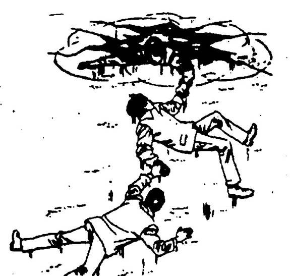
- Các bạn cũng có thể đẩy về phía nạn nhân một cành cây hay một sào dài.
- Nếu có một cái thang nhẹ thì thật lý tưởng, khi nạn nhân đã bám được vào thang thì bảo họ nằm lên để các bạn kéo vào.
- Nếu các bạn có dây và nạn nhân còn tỉnh táo, thì các bạn làm nhanh một nút ghế đơn ở đầu dây để ném cho họ. Nếu nạn nhân đã hôn mê, người cấp cứ cần nhanh chóng bụôc một đầu dây vào người mình, đầu dây kia nhờ người khác cầm hay cột vào một điểm chịu chắc chắn, rồi bò tới kéo nạn nhân ra khỏi hố băng, đưa đến nơi an toàn.
TÉ NGÃ XUỐNG DỐC
Việc té ngã bất ngờ khi di chuyển trên băng hay trên sường dốc có phủ tuếyt là chuyện thường xảy ra.
- Nếu đi một nhóm có buộc chung một sợi dây thì người rơi té có thể được những thành viên trong nhóm trì kéo để giữ lại.
- Nếu di chuyển mà không có dây bụôc, khi bị té ngã, hãy sử dụng rìu như một cái phanh. Nếu các bạn đang mang giầy có đinh, các bạn nên dang chân ra và co đầu gối lại để cho những cái đinh bám vào tuyết.
BỊ PHỎNG BỞI TIA NẮNG
Tia nắng phản chiếu từ băng tuyết, nước và đá, có thể đủ sức làm phỏng da các bạn, gây khó chịu. Sự phỏng nầy vẫn có thể xảy ra ngay cả trong những ngày bầu trời đầy mây. Vì vậy, các bạn cần che kín cơ thể, những phần lộ ra thì phải bôi kem chống nắng. Nếu không, vết phỏng sẽ dẫn đến sốt và phải cần vài ngày để hồi phục.
TUYẾT LÀM CHÓI MẮT
Khi ánh nắng mặt trời chiếu trên một vùng tuyết trắng rộng lớn, sẽ tạo nên ánh sáng phản chiếu đến nhức mắt. Điều nầy thường xảy ra sau một trận tuyết rơi hoặc ngay cả khi mặt trời bị khuất sau màng sương hay hơi nước mỏng. Triệu chứng của chói tuyết là các bạn cảm giác như bụi vào mắt, nhức mắt, chảy nước mắt, nhức đầu và chịu không nổi ánh sáng. Muốn đề phòng, các bạn nên đeo kính râm (hay kính khe hẹp tự chế) khi đi trên tuyết.
TUYẾT LỞ
Tuyết lở không là tai nạn mà là một thảm hoạ. Trong thời Thế Chiến II, một trận tuyết lở đã chôn vùi 40.000 quân nhân ở vùng Tyrol, trong trận chiến giữa Áo và Ý. Và còn biết bao nhiêu đoàn thám hiểm, biết bao nhiêu đoàn lữ hành … bị chôn vùi dưới những trận tuyết lở. Cho nên, việc dự đoán chính xác một trận tuyết lở là rất cần thiết.
DỰ ĐOÁN MỘT TRẬN TUYẾT LỞ
Để dự đoán một trận tuyết lở, chúng ta không nên chỉ dựa vào một yếu tố đơn giản mà phải kết hợp bởi nhiều yếu tố. Một người có kinh nghiệm, có thể nhận ra tình trạng nguy hiểm trong từng trường hợp, do đó họ có thể tránh xa khỏi vùng có tuyết lở.
Mọi trận tuyết lở đều có một nguyên nhân “kích hoạt”. Thường thì có 4 nguyên nhân “kích hoạt” sau:
- Sự quá tải
- Vết cắt, vết nứt
- Nhiệt độ
- Sự chấn động
Sự quá tải: Đây có lẽ là nguyên nhân chính trong những trận tuyết lở. Những đống tuyết mới được hình thành dần dần và có kết cấu chặt chẽ, cho đến khi tự nó bị phá vỡ bởi sức nặng của chính nó và bắt đầu trượt đi.
Vết nứt: Điều nầy xảy ra do nhiều nguyên nhân khác nhau
- Bị cắt bởi những đế giầy trượt tuyết
- Bị cây cối, vách đá… cắt ngang làm mất sự kết dính
- Sự chuyển dịch của lớp tuyết bên dưới
Nhiệt độ: Nhiệt độ gia tăng làm yếu đi sự kết dính của tuyết, làm tăng thêm độ giòn cũng như sức căng của một mảng băng.
Chấn động: Yếu tố nầy có liên quan đến sự nứt rạn, nhưng có tính chất khác biệt, không giống như những tác động tương tự. Vì ở đây, tuyết có thể nứt một vết dài và lở là có thể do tiếng sấm, tiếng la lớn có âm thanh cao, động đất hoặc những chấn động xuyên qua mặt đất, các vụ nổ hoặc sóng phản hồi từ các vụ nổ, sự di chuyển của các xe cơ giới hạng nặng…
PHẢN ỨNG KHI BỊ TUYẾT LỞ
- Vất bỏ tất cả vật nặng trên người như ba lô, giầy trượt…
- Rời xa tuyến đường tuyết lở bằng cách chạy dạt ngang sang hai bên hay chạy lên cao (không nên chạy xuống núi, vì tuyết lở có thể đạt tới vận tốc 50km/giờ, các bạn không thể nào thoát được).
- Nếu không chạy kịp thì cố gắng bám chặt bất cứ vật gì kiên cố ở dốc núi như: gốc cây lớn, mỏm đá…
- Nếu thấy bị cuốn theo dòng tuyết, lập tức vùi đầu vào trong cổ áo để tránh băng tuyết lọt vào đường hô hấp gây ngạt thở. Hai tay ôm lấy đầu để tạo thành một khoảng không gian hô hấp lớn nhất.
- Nếu bị tuyết dồn xuống vách núi, cần cố gắng ngoi lên trên bề mặt của lớp tuyết. Sử dụng động tác như bơi để ngoi lên, hai tay đở đá và cản tuyết trượt xuống.
- Khi thấy tốc độ của tuyết lở giảm xuống, thì cần nhanh chóng cố gắng tìm cách phá tuyết mà ra, nếu không, khi tuyết vụn trượt xuống và dừng lại sẽ nhanh chóng bị đông cứng.
- Để cho nước bọt trong miệng từ từ chảy ra coi xem vị trí cơ thể của chúng ta có lộn ngược hay nghiêng lệch gì không. Nếu nước bọt chảy ngược vào miệng thì chứng tỏ cơ thể chúng ta đang đảo ngược. Cố gắng xác định vị trí chính xác của cơ thể để phá tuyết mà ra.
- Nếu không chui ra khỏi đống tuyết được thì không nên cửa động nhiều để tiết kiệm năng lượng của cơ thể. Tranh thủ ép tuyết ra chung quanh để tạo một không gian hô hấp trong khi chờ cứu viện.
CỨU THOÁT NẠN NHÂN BỊ TUYẾT LỞ
Khi một người bị tuyết lở chôn vùi, chúng ta phải tổ chức việc cấp cứu càng nhanh thì hy vọng sống sót của họ càng lớn. Nhiều trường hợp được ghi nhận là nạn nhân có thể sống sót sau 72 giờ bị chôn vùi trong tuyết. Tuy nhiên, thông thường thì nạn nhân chết ngay lập tức vì va chạm, hoặc chết trong thời gian ngắn vì giảm nhiệt, vì choáng, vì nghẹt thở… trung bình chỉ tồn tại trong một giờ đồng hồ.
Nếu có một dấu vết gì của nạn nhân trong khu vực, hãy lập tức bắt đầu tìm kiếm thăm dò ở quanh đó. Nếu không thấy, chúng ta thăm dò ở những vị trí có khả năng nạn nhân bị cản lại như cây cối, tảng đá hoặc phía dưới những chỗ đó. Những mép của đường trượt hay những điểm đặc biệt cũng được xem xét kỹ. Xác nạn nhân cũng có thể văng lên trên bề mặt hay bên cạnh của đường trượt.
Những nạn nhân được cứu sống trong những vụ tuyết lở, phải được di chuyển bằng phương diện nhanh nhất, dưới sự chăm sóc đặc biệt của nhân viên y tế.
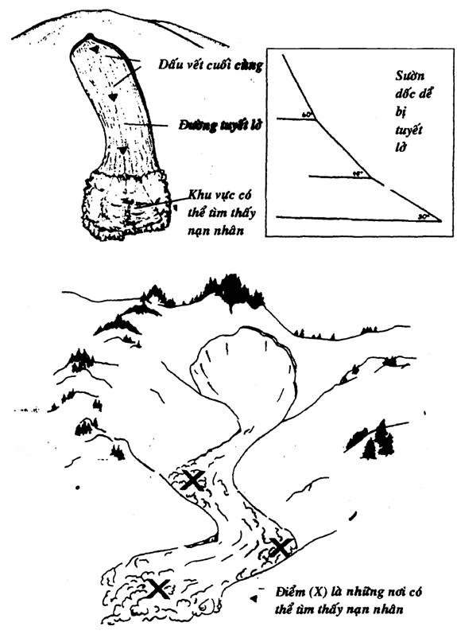
TÌM PHƯƠNG HƯỚNG
Trong các vùng băng tuyết ở Bắc Bán Cầu, nếu không có địa bàn trong tay, các bạn có thể tìm ra hướng Nam dễ dàng nhờ những “ống khói tiên”. Đó là những bàn băng hình thành trên bề mặt lớp băng với một tảng đá. Tảng đá đó bảo vệ cho lớp băng phía dưới không tan chảy và khối đá sẽ dần dần nhô cao lên như một ống khói.
Ống khói nầy sẽ chỉ cho chúng ta hướng Nam, vì bức xạ chéo của mặt trời làm tan băng ở hướng nầy nhiều hơn cho nên “ống khói” có khuynh hướng chồm về hướng Nam.
Nếu chúng ta ở vùng Nam Bán Cầu thì ngược lại.
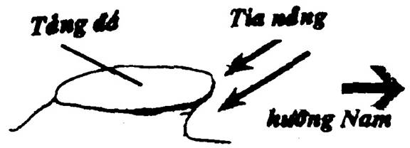
SINH TỒN TRONG VÙNG BĂNG GIÁ
Phần lớn những người gặp nạn ở vùng băng tuyết hay giá lạnh thường do sự giảm nhiệt của cơ thể làm thương tổn cục bộ dẫn đến sự tê cóng, làm cho mọi hoạt động để sinh tồn gặp nhiều khó khăn, sau cùng là gây tử vong.
Vậy: điều quan trọng và bức thiết nhất để sinh tồn trong vùng băng tuyết hoặc lạnh giá là phải giữ ấm cơ thể.
- Đốt lửa để sưởi ấm là biện pháp quan trọng nhất trong vùng băng giá, vì vậy phải biết cách gìn giữ và bảo quản lửa (Xin xem phần LỬA)
- Quần áo chống lạnh nên rộng thoáng. Khi đã mặc quần áo chống lạnh rồi, thì không nên hoạt động mạnh, vì nếu ra mồ hôi nhiều mà không thoát được khiến cho bên trong quá ẩm, làm giảm khả năng chống lạnh. Nếu cần làm việc nặng thì cởi quần áo dầy ra.
- Quần áo, găng tay, tất, giầy, mũ… giữ được khô ráo cũng là một điều tối quan trọng.
- Tạo một chỗ trú ẩn an toàn và tiện nghi (Xin xem phần CHỖ TRÚ ẨN)
- Nếu không có túi ngủ thì cho dù chỗ trú ẩn có nhóm lửa cũng không nên ngủ nằm để tránh bị tê cóng.
- Khi cần hong khô y phục bên lửa thì phải cởi ra, không nên vừa mặc vừa hong khô, vì sẽ làm cho chúng bị ẩm ướt do đổ mồ hôi.
- Không nên mặc nhiều quần áo khi ngủ bằng túi ngủ, vì sẽ đổ mồ hôi nhiều làm túi ngủ ẩm ướt, vừa khó ngủ vừa dễ bị bệnh khi ra khỏi túi.
- Túi ngủ không nên để trực tiếp trên mặt tuyết mà nên lót một lớp cành lá cây hay nệm khí.
- Sau mỗi lần sử dụng, nên làm thoát khí ấm ở trong túi ra, để khi trời giá lạnh sẽ không bị nhưng tụ thành hơi nước.
- Nếu có nhiều người ở chung mà không có túi ngủ, thì mỗi người nên thay phiên nhau chợp mắt ngủ, người thức tỉnh phải duy trì và bảo quản ngọn lửa, đồng thời thỉnh thoảng nên gọi tỉnh người khád để tránh mê thiếp đi do quá lạnh.
- Nếu thấy có triệu chứng da bị lạnh, rùng mình, bước đi không vững, phát âm khó khăn… lập tức tìm ngay một nơi ấm áp để trú ẩn. Đốt lửa để sưởi ấm, uống nước nóng, ăn những thức ăn ngọt có năng lượng cao (như kẹo, bánh, sô-cô-la…) ủ ấm, mặc thêm quần áo.
- Nếu thấy xuất hiện ở mặt và tay những đốm màu trắng, cho thấy có khả năng bị tổn thương do lạnh. Hãy chà xát hay hơ nóng những chỗ đó.
- Không nên dùng tuyết để chà xát vùng bị tổn thương, vì như thế sẽ làm tăng nhanh sự tảnh nhiệt, lan rộng phạm vi tổn thương. Nếu được thì nên ngâm trong nước ấm khoảng 43°C. Những bạn đồng hành có thể giúp nạn nhân bằng cách ủ những nơi thương tổn dưới nách hay ngực của mình.
- Trong môi trường băng giá, không nên uống rượu hay xoa bóp cơ thể để chống lạnh, vì như thế sẽ làm dãn nở những mao mạch gần da, tăng huyết dịch, bị tản nhiệt nhanh, nhiệt độ cơ thể sẽ hạ xuống gây nên tê cóng.
- Nếu thấy có người bạn đồng hành nào có những triệu chứng bất thường như: nói lảm nhảm, mắt lạc thần, hành động kỳ lạ... lập tức tiến hành cấp cứu ngay. Chủ yếu là sưởi ấm cơ thể, ủ ấm, cho uống nước nóng, ăn thức ăn có năng lượng cao, vận động cơ thể. Nếu để trễ thì vô cùng nguy hiểm.
- Nếu có điều kiện, các bạn nên ăn vặt thường xuyên, nhất là những món ăn có năng lượng cao. Thiếu thốn thực phẩm ở vùng băng giá thì nguy hiểm gấp nhiều lần thiếu thốn thực phẩm ở rừng núi hay sa mạc. Vì đói sẽ dẫn đến tình trạng tê cóng.